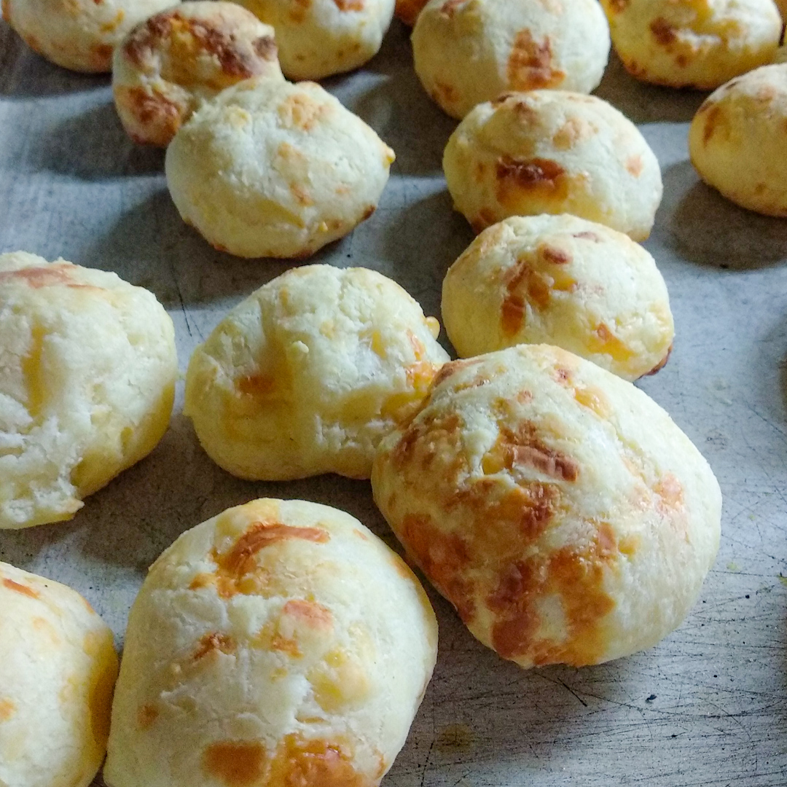

Volver al recetario
Chipá

Ingredientes
- 500gr. Fécula de mandioca
- 300gr. Queso Mozzarella
- 25gr. Queso Parmesano
- 150ml. Agua
- 150ml. Leche
- 150ml. Aceite
- 3 Huevos
- 1 cdita Sal
Procedimiento
- Mezclamos los líquidos (Agua, Aceite y Leche) y mandamos a calentar hasta que hiervan.
- Mezclamos los 500gr de fécula con la sal y agregamos los líquidos.
- Agregamos los 3 huevos e integramos todo.
- Agregamos los quesos y formamos un bollo.
- Cortamos la masa en bollitos de 50gr aproximadamente y los ponemos en una placa enmantecada.
- Mandamos al horno a 180° por 30 minutos.